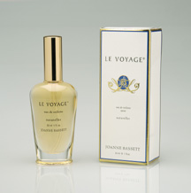

Natural Parfum in Jojoba Oil

Le Voyage ® RP77

Le Voyage ® RP87
Reveiller ™ is French "to awaken". A poetic medley of intoxicating wood notes with herbal nuances, citrus and floral topnotes. Reveiller ™ is grounding, balancing, and pleasant yet sensuous. Subtle yet playful. The complex essential oils, some chosen from rare and sacred plants of India, are "married" for a lengthy period prior to bottling in the exquisite French parfum bottles. Created drop by drop with intention and lovingly blended by hand to ensure the highest quality natural eau de toilette rich in both character and sophistication. Reveiller ™ eau de toilette is created to be enjoyed by women and men alike and may even be worn in layered combination with Le Voyage ®. It may lend the power to awaken. Open your heart and awaken to the potential.
© 2001 All rights reserved
Le Voyage ® is an unparalleled eau de toilette. Each radiant bottle is lovingly blended from rare and precious essential oils to form a harmonious potion. The superior combination of exotic flowers and sacred oils creates a romantic bouquet. Jasmine, rose, sandalwood and other exotic and unique oils are comingled to compose a symphony of melodious notes, a concerto never before heard. The sensuous fusion has a mystical quality with the potential to transform its wearer as the essence of the eau de toilette is emanated from the body. This haunting fragrance embodies mysteries of the universe that will reveal its secrets and wisdom to you. Opening this luscious French parfum decanter will invoke in you a new sense of the divine. We invite you to begin the journey.
© 2001 All rights reserved.
There are no synthetic fragrance oils, nature identical oils, or manmade fragrances of any type in these natural eau de toilettes and parfums. They contain all natural essential oils that have been steam distilled or hydrodistilled from the plants or cold pressed from the fruits. The eau de toilette contains non drying grape alcohol. The parfum contains jojoba oil as a base.
© 2001 All rights reserved.
Natural Parfum in Jojoba Oil |
|||
Le Voyage ® RP77 |
Le Voyage ® RP87 |
||
Available in these sizes:
RP78 $30: Reveiller ™ parfum - in a 2 ml cobalt blue glass bottle
RP77 $30: Le Voyage ® parfum - in a 2 ml cobalt blue glass bottle
RP88 $120: Reveiller ™ parfum - in a 8 ml French parfum bottle with ground neck stopper
RP87 $120: Le Voyage ® parfum - in a 8 ml French parfum bottle with ground neck stopper
Eau de Toilette in Non-drying Grape Alcohol |
|
 Le Voyage ® RT37 |
|
Available in these sizes:
RP58 $2: Reveiller ™ eau de toilette - in 1 ml sampler perfume vial
RP57 $2: Le Voyage ® eau de toilette - in 1 ml sampler perfume vial
RT38 $60: Reveiller ™ eau de toilette - in a 1 oz (30 ml) eau de toilette French spray bottle
RT37 $60: Le Voyage ® eau de toilette - in a 1 oz (30 ml) eau de toilette French spray bottle
{kind=link}